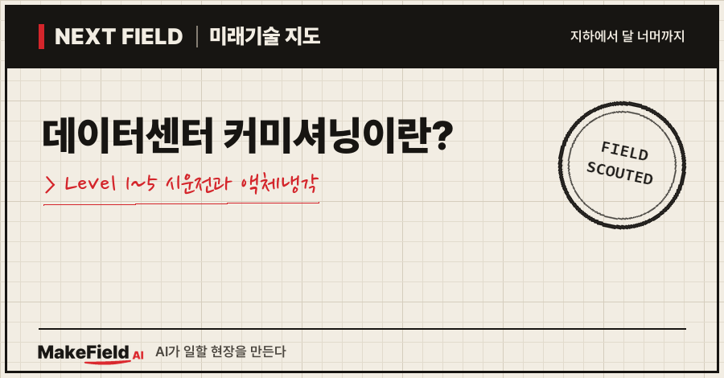
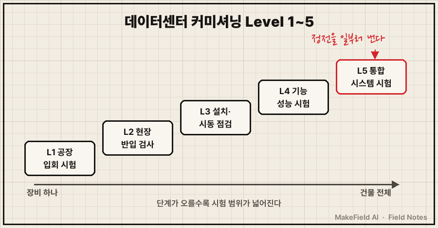
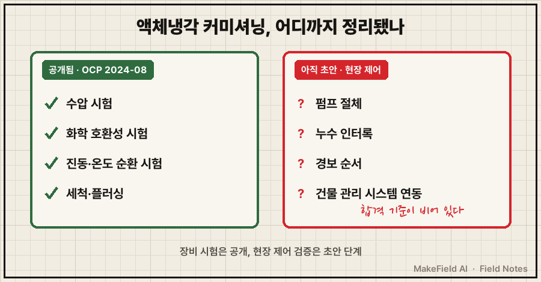
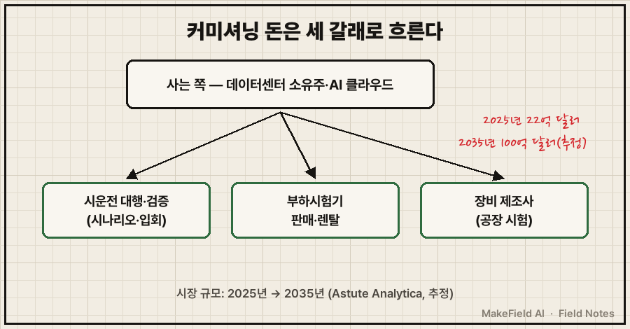

한 줄 요약: 데이터센터 커미셔닝은 장비를 공장에서 시험하는 Level 1부터 정전까지 일부러 일으켜 건물 전체를 시험하는 Level 5까지, 데이터센터가 설계대로 버티는지 다섯 단계로 확인하는 과정이에요. 시장조사 기준으로 이 시운전·시험 서비스 시장은 2025년 22억 달러에서 2035년 100억 달러로 커질 것으로 추정됩니다(Astute Analytica, 추정).
💡 커미셔닝(Commissioning, 시운전) — 새로 지은 설비를 실제로 켜 보고, 설계한 대로 돌아가는지 단계별로 확인해 넘겨받는 과정. 새 아파트 입주 전 수도·보일러·전기를 하나씩 다 틀어 보는 '사전 점검'의 데이터센터판이다.
그런데 AI 서버를 물로 식히는 액체냉각이 들어오면서 이 익숙한 절차가 흔들리고 있어요. 데이터센터 평가 기관 업타임 인스티튜트는 "직접 액체냉각은 커미셔닝의 모든 단계에서 어려움을 만든다"고 썼습니다(Uptime Institute, 2026-01). 2026년 10월 기준으로 커미셔닝이 무엇이고, 왜 지금 다시 주목받으며, 돈은 어디로 흐르는지 풀어 볼게요.
1. 데이터센터 커미셔닝 Level 1~5는 무엇인가요
데이터센터 커미셔닝은 보통 다섯 단계(Level 1~5)로 나누고, 단계가 올라갈수록 시험 범위가 장비 하나에서 건물 전체로 넓어진다. 업계 자료마다 이름은 조금씩 다르지만 사다리 모양은 같아요(Archdesk, 2026-06 / HorizonIQ, 2015-09).
| 단계 | 이름 | 무엇을 보나 |
|---|---|---|
| Level 1 | 공장 입회 시험 | 장비가 출하 전 공장에서 성능을 내는지 |
| Level 2 | 현장 반입 검사 | 도착한 장비가 공장 시험 때와 같고, 사양대로 설치됐는지 |
| Level 3 | 설치·시동 점검 | 장비 하나하나가 따로 켜 봤을 때 제대로 도는지 |
| Level 4 | 기능 성능 시험(FPT) | 각 시스템이 정해진 동작 순서대로 움직이는지 |
| Level 5 | 통합 시스템 시험(IST) | 전기+냉각+제어가 한 덩어리로 고장 상황을 버티는지 |
💡 FPT(Functional Performance Test, 기능 성능 시험) — 장비별로 "이 경보가 뜨면 이렇게 움직여야 한다"는 시나리오를 하나씩 돌려 보는 시험.
💡 IST(Integrated Systems Test, 통합 시스템 시험) — 전기·냉각·제어를 모두 연결한 뒤 정전 같은 고장을 일부러 만들어 건물 전체가 버티는지 보는 마지막 시험.
Level 5가 가장 극적이에요. HorizonIQ는 IST에 "주 전원을 끊어 예비 시스템이 작동하는지 확인하는 것"이 들어간다고 설명했습니다(HorizonIQ, 2015-09). Archdesk는 Level 5를 "전력+냉각+제어가 하나의 사슬로 고장을 버티는지" 보는 단계로 정리했어요(Archdesk, 2026-06).

단계 이름과 범위는 건물주(발주 측) 사양에 따라 달라질 수 있어요. 실제 현장은 계약서의 시운전 사양이 정본입니다.
2. 왜 지금 커미셔닝이 다시 뜨나요 — 액체냉각이 바꾼 것
공기로 식히던 데이터센터에 물이 들어오면서, 기존 커미셔닝 절차에 없던 시험이 생겼고 그 모범 관행은 아직 정리 중이다. 업타임 인스티튜트는 그 문제의 중심에 CDU가 있고, 액체냉각 시설의 커미셔닝 모범 관행은 "아직 성숙 중"이라고 진단했어요(Uptime Institute, 2026-01).
💡 CDU(Coolant Distribution Unit, 냉각수 분배 장치) — 건물 쪽 냉수와 서버 쪽 냉각수를 열교환기로 나누고, 펌프·밸브로 온도·압력·유량을 맞춰 서버마다 나눠 주는 장치. 액체냉각의 '심장'.
그럼 무엇이 정리돼 있고 무엇이 비어 있을까요. 장비 쪽 시험 방법은 이미 공개돼 있어요. 빅테크가 데이터센터 설계를 공유하는 OCP는 2024년 8월 'CDU 시험 방법·성능 등급' 백서(Rev 1.0)를 냈습니다. 인텔·CoolIT·메타가 썼고, 출처만 밝히면 누구나 고쳐 쓸 수 있는 공개 라이선스예요(OCP, 2024-08).
💡 OCP(Open Compute Project) — 메타·마이크로소프트 등 빅테크가 데이터센터 장비 설계를 공개 표준으로 나누는 모임.
이 백서에는 수압 시험, 화학 호환성 시험, 진동 시험, 온도 순환 시험, 세척·충전·플러싱 같은 제품 시험이 목차로 정리돼 있어요. "펌프 이중화(N+1 이상)는 필수"라는 문장도 있습니다(OCP, 2024-08).
💡 플러싱 — 처음 냉각수를 채우기 전에 배관 안 먼지·쇳가루를 씻어 내는 작업.
💡 N+1 — 필요한 대수(N)에 1대를 더 두는 이중화. 펌프 2대가 필요하면 3대를 둔다.
반면 제어 쪽은 한 문단뿐이에요. 같은 백서의 '센서·제어기' 절은 설정값을 벗어나면 경보를 내고, 누수 때 펌프 전원을 끊거나 밸브를 여닫는 자동 보호가 있다고 기능만 적었어요(OCP, 2024-08). 펌프가 멈췄을 때 대기 펌프로 넘어가는 절체나 경보 순서를 현장에서 어떤 합격 기준으로 검증할지는 나오지 않습니다.
💡 절체 — 운전 중인 펌프가 고장 나면 대기 펌프로 자동으로 넘겨 운전을 잇는 동작.
💡 인터록 — 위험 조건이 되면 기계를 자동으로 멈추게 묶어 둔 안전 장치. 누수가 감지되면 펌프를 세우는 식이다.

이 빈칸을 채우는 움직임이 2025년에 나왔어요. 세계 슈퍼컴퓨팅 학회 SC25에서는 미국 국립연구소(ORNL·LLNL·Sandia)와 Vertiv·Glumac·T5DataCenters 관계자가 '액체냉각 커미셔닝 지침 초안'을 참석자 의견으로 다듬는 세션을 열었습니다(SC25 BoF, 2025-11). 아직 '초안' 단계라는 점이 핵심이에요.
3. 커미셔닝 돈의 흐름 — 누가 사고, 누가 파나요
커미셔닝 비용은 데이터센터를 짓는 소유주·운영사가 내고, 시운전 대행사·시험 장비 렌탈사·장비 제조사가 나눠 가진다. Astute Analytica는 이 시장을 "공장 출하 시 입회 테스트부터 통합 시스템 테스트 및 재시운전"까지로 정의하고, 건설·설계·상시 시설 관리는 뺐어요(Astute Analytica, 추정).
| 구분 | 누가 | 무엇을 사고파나 |
|---|---|---|
| 사는 쪽 | 데이터센터 소유주·AI 클라우드 운영사 | 단계별 시험 수행, 시험 결과 문서, 운영팀 인수인계 |
| 파는 쪽① | 시운전 대행·검증 회사 | 시험 시나리오 작성, 입회, 고장 상황 시험 진행 |
| 파는 쪽② | 부하시험기 판매·렌탈사 | 서버 대신 열을 내는 '가짜 서버' 장비와 운영 인력 |
| 파는 쪽③ | 장비 제조사 | Level 1 공장 시험, 자체 검증 설비 |
💡 부하시험기(Load Bank) — 진짜 서버 대신 전기를 먹고 같은 양의 열을 내는 '가짜 서버'. 비싼 GPU를 꽂기 전에 전기·냉각이 버티는지 미리 확인한다.
시장 규모는 조사마다 범위가 달라요.
- 시운전·시험 서비스 전체: 2025년 22억 달러 → 2035년 100억 달러, 2026~2035년 연 16.3% 성장(Astute Analytica, 추정)
- 전기 시운전만: 2026년 30억 7,000만 달러 → 2034년 65억 달러, 연 10% 성장(Stratistics MRC, 2026-02, 추정)
두 조사는 시장을 정의하는 범위가 달라서 숫자를 직접 비교할 수 없어요. '전기만'이 '전체'보다 큰 것도 그 때문입니다. 두 조사 모두 시장이 커진다고 보는 방향만 같다고 읽는 편이 안전해요.

사람값에서도 수요가 보여요. 미국 AI 클라우드 회사 Fluidstack은 'CDU 커미셔닝 배치 매니저'를 연봉 15만~20만 달러에 모집했습니다(Fluidstack 채용 공고, 현재 마감). 필수 요건은 데이터센터 운영·기계설비·HVAC·액체냉각 경력 5년 이상과 기계 계열 학위였고, ASHRAE·BCxA 시운전 지침 지식은 '우대'였어요. 자격증을 필수로 요구한 항목은 없었습니다.
💡 HVAC — 냉난방·환기·공조 설비.
💡 ASHRAE / BCxA — 각각 미국 냉난방공조학회, 미국 건물 시운전 협회. 둘 다 시운전 실무 지침을 낸다.
※ 이 글에 나온 기업명과 시장 전망치는 산업 구조를 설명하기 위한 예시입니다. 특정 종목의 매수·매도를 권하는 글이 아닙니다.
4. 누가 액체냉각 커미셔닝을 하고 있나요
장비 회사는 검증 설비를 직접 짓고, 연구기관은 제어 시나리오 시험법을 공개하는 쪽으로 움직이고 있다. 공개된 사례를 모으면 이래요.
| 누가 | 무엇을 | 출처 |
|---|---|---|
| LG전자 | 600kW CDU로 엔비디아 인증, 평택 'Chip-to-Chiller' 검증 사이트에서 과도 응답·저부하 안정성 시험, 메가와트급 대형 모델로 인증 확대 추진 | Cooling Post(2026-07) |
| Aggreko | 인도 벵갈루루 데이터센터의 CDU를 가동 전 시험, 600kW 전기 보일러로 450kW 부하를 걸어 7일간 진행 | Aggreko 사례(회사 자료) |
| 엔비디아·UT 알링턴 | 인로우 CDU 특성 연구: 펌프 1대를 일부러 고장 낸 절체 시험, 누수 감지, 저·고부하 온도 유지, 정차압·정유량 모드 | ASME(2026) |
| ORNL·LLNL·Sandia 등 | 액체냉각 커미셔닝 지침 초안을 공개 세션에서 보완 | SC25 BoF(2025-11) |
💡 칠러 — 건물 쪽 냉수를 만드는 대형 냉동기. 'Chip-to-Chiller'는 칩부터 칠러까지 냉각 사슬 전체를 한 번에 본다는 뜻이다.
💡 정차압·정유량 모드 — 배관 양 끝 압력 차를 일정하게 지키거나(정차압), 흐르는 물의 양을 일정하게 지키도록(정유량) 펌프 속도를 자동으로 바꾸는 두 가지 제어 방식.
엔비디아·UT 알링턴 연구는 25kW 랙 8개, 냉각 루프 32개 규모 설비에서 진행됐고 Journal of Electronic Packaging 2025년 12월호에 실렸어요(ASME, 2026). 다만 기사에는 절체 회복 시간 같은 결과 수치가 나오지 않습니다. Aggreko 사례에서는 서버 쪽 냉각액이 PG25%였고, CDU가 오염에 매우 민감해 이물질 관리가 핵심이었다고 적었어요(Aggreko 사례).
💡 PG25% — 물에 프로필렌글리콜을 25% 섞은 냉각액. 잘 얼지 않고 세균이 덜 자란다.
국내에서는 인력이 먼저 거론돼요. 한국냉난방공조신문은 "CDU, 냉각액, 배관부품, 설치인력, 운영경험은 아직 충분하지 않기 때문"이라며 액체냉각이 병목이 될 수 있다고 썼습니다(한국냉난방공조신문, 2026-08). 기사에 구체적인 인력 수치는 없어요.
5. 액체냉각 커미셔닝은 언제 표준이 되나요 — 한계와 반대 근거
장비 시험은 이미 공개 문서가 있지만, 현장 통합 커미셔닝 지침은 2026년 10월 현재 커뮤니티 초안 단계다. 낙관도 비관도 근거를 나눠 볼게요.
- 빠르게 정리된다는 근거: OCP가 제품 시험 방법을 공개 라이선스로 풀었고(OCP, 2024-08), 국립연구소와 장비·시운전 회사가 함께 지침 초안을 다듬고 있어요(SC25 BoF, 2025-11). 엔비디아 연구진도 절체·누수 시험을 논문으로 냈습니다(ASME, 2026).
- 천천히 온다는 근거: 업타임은 모범 관행이 "아직 성숙 중"이라고 했고(Uptime Institute, 2026-01), 국내는 설치인력·운영경험 부족이 병목으로 거론돼요(한국냉난방공조신문, 2026-08).
- 숫자의 한계: 시장 규모는 조사업체 추정이고, 두 조사의 범위가 달라 교차 확인이 안 돼요(추정). 연봉·요건은 미국 공고 1건 기준이라 대표성이 제한적입니다.
- 장비 회사의 내재화: 대형 장비 회사가 자체 검증 설비를 갖추면, 일부 시험은 외부 대행 대신 Level 1 공장 시험 안으로 들어갈 수 있어요(Cooling Post, 2026-07을 바탕으로 한 해석).
정리하면 데이터센터 커미셔닝의 '사다리'는 이미 있어요. 액체냉각이 그 사다리의 Level 4~5에 새 칸, 곧 펌프 절체·누수 인터록·경보 순서 검증을 끼워 넣는 중이라고 볼 수 있어요(위 출처를 바탕으로 한 해석). 다음으로 볼 신호는 SC 학회 지침의 후속판, 그리고 대형 CDU의 인증 소식이에요.
자주 묻는 질문
Q. 커미셔닝에 건설이나 설계도 들어가나요?
들어가지 않아요. 커미셔닝은 다 지은 설비가 설계 의도대로 움직이는지 공장 시험부터 통합 시험까지 확인하는 과정이에요(Archdesk, 2026-06). 시장조사에서도 건설·설계 엔지니어링·상시 시설 관리는 커미셔닝 시장에서 빼고 봅니다(Astute Analytica).
Q. 통합 시스템 시험(IST)에서는 실제로 정전을 내나요?
HorizonIQ 설명에 따르면 IST에는 주 전원을 끊어 예비 시스템이 작동하는지 확인하는 시험이 들어가요(HorizonIQ, 2015-09). 정확한 시나리오는 프로젝트 시운전 사양에 따라 달라집니다.
Q. 액체냉각 커미셔닝을 하려면 자격증이 필요한가요?
이 글에서 확인한 미국 공고 1건에는 필수 자격증이 없었고, 기계·HVAC·액체냉각 경력 5년 이상이 핵심 요건이었어요(Fluidstack 채용 공고). 공고 1건 기준이라 업계 전체로 일반화하기는 어렵습니다.
오늘의 용어 정리
- 커미셔닝(시운전) — 새 설비를 켜서 설계대로 도는지 단계별로 확인하고 넘겨받는 과정
- Level 1~5 — 공장 입회 시험 → 현장 반입 검사 → 설치·시동 점검 → 기능 성능 시험 → 통합 시스템 시험
- FPT(기능 성능 시험) — 장비별 동작·경보 시나리오를 하나씩 돌려 보는 시험
- IST(통합 시스템 시험) — 전기·냉각·제어를 다 연결하고 고장 상황까지 만들어 보는 마지막 시험
- CDU(냉각수 분배 장치) — 건물 냉수와 서버 냉각수를 나누고 온도·압력·유량을 맞추는 장치
- OCP — 빅테크가 데이터센터 장비 설계를 공개 표준으로 나누는 모임
- 플러싱 — 배관 속 이물질을 씻어 내는 작업
- N+1 — 필요한 대수에 1대를 더 둔 이중화
- 절체 / 인터록 — 고장 펌프에서 대기 펌프로 넘기는 동작 / 위험하면 자동으로 멈추게 묶은 안전 장치
- 부하시험기 — 서버 대신 열을 내는 '가짜 서버'
- 정차압·정유량 모드 — 압력 차 또는 유량을 일정하게 지키는 펌프 제어 방식
- PG25% — 프로필렌글리콜 25% 냉각액
지난 Next Field에서 CDU라는 장치 자체를 다뤘다면, 오늘은 그 장치를 처음 켜는 '커미셔닝' 쪽을 봤어요. 여러분은 액체냉각 커미셔닝이 장비 회사 안으로 들어갈까요, 아니면 독립된 검증 서비스로 커질까요?
출처
[1] Uptime Institute(2026-01) — 직접 액체냉각은 커미셔닝의 모든 단계에서 어려움을 만들고, 그 중심에 CDU가 있으며, 액체냉각 시설의 커미셔닝 모범 관행은 아직 성숙 중
→ https://intelligence.uptimeinstitute.com/resource/coolant-distribution-units-can-complicate-commissioning
[2] Archdesk(2026-06) — 커미셔닝 Level 1~5 정의: 공장 시험, 현장 반입·설치 확인, 개별 장비 점검, 시스템 기능 시험, 전력·냉각·제어 통합 시험
→ https://archdesk.com/blog/data-center-commissioning-levels
[3] HorizonIQ(2015-09) — 커미셔닝 5단계 이름(공장 입회 시험~통합 시스템 시험), IST에 주 전원을 끊어 예비 시스템 작동을 확인하는 시험 포함
→ https://www.horizoniq.com/blog/integrated-systems-testing-for-data-centers/
[4] OCP 백서(2024-08) — CDU 시험 방법·성능 등급 Rev 1.0: 인텔·CoolIT·메타 공저, 공개 라이선스, 수압·화학 호환성·진동·온도 순환·세척·충전·플러싱 항목, 펌프 이중화(N+1 이상) 필수, 센서·제어 절은 경보·자동 보호 기능만 서술
→ https://www.opencompute.org/documents/ocp-wp-l-lcdu-test-methodology-performance-rating-r1-pdf/
[5] SC25 BoF(2025-11) — ORNL·LLNL·Sandia 국립연구소와 Glumac·Vertiv·T5DataCenters가 액체냉각 커미셔닝 지침 초안을 사례와 참석자 의견으로 보완하는 세션
→ https://sc25.supercomputing.org/proceedings/bof/bof_pages/bof185.html
[6] ASME(2026) — 엔비디아·UT 알링턴의 인로우 CDU 특성 연구: 펌프 고장 절체, 누수 감지, 저·고부하 온도 유지, 정차압·정유량 모드, 25kW 랙 8개·냉각 루프 32개, Journal of Electronic Packaging 2025-12호, 결과 수치는 기사에 없음
→ https://www.asme.org/membership/r-d-pulse/april-june-2026/critical-cool-down
[7] Astute Analytica — 데이터센터 시운전·시험 서비스 시장 2025년 22억 달러 → 2035년 100억 달러, 2026~2035년 연 16.3% 성장 추정, 시장 정의(공장 입회 시험~통합 시스템 시험·재시운전, 건설·설계 제외)
→ https://www.astuteanalytica.com/ko/industry-report/data-center-commissioning-and-testing-services-market
[8] Stratistics MRC(2026-02) — 데이터센터 전기 시운전 시장 2026년 30억 7,000만 달러 → 2034년 65억 달러, 연 10% 성장 추정
→ https://www.giikorea.co.kr/report/smrc1945970-data-center-electrical-commissioning-market.html
[9] Fluidstack 채용 공고 — CDU 커미셔닝 배치 매니저, 연봉 15만~20만 달러, 경력 5년 이상·기계 계열 학위, ASHRAE·BCxA 지침 지식 우대, Level 1~5 전 단계 담당, 필수 자격증 없음(현재 마감)
→ https://jobs.dukecapitalpartners.duke.edu/companies/fluidstack/jobs/72954007-commissioning-cdu-deployment-manager-data-centers
[10] Cooling Post(2026-07) — LG전자 600kW CDU 엔비디아 인증, 평택 Chip-to-Chiller 검증 사이트에서 과도 응답·저부하 안정성 시험, 메가와트급 대형 모델로 인증 확대 추진
→ https://www.coolingpost.com/world-news/lg-cdu-gains-nvidia-ai-factory-validation/
[11] Aggreko 사례 — 인도 벵갈루루 데이터센터 CDU 가동 전 시험, 600kW 전기 보일러·450kW 시험 부하·7일 진행, 서버 쪽 냉각액 PG25%, 오염에 매우 민감
→ https://www.aggreko.com/en-in/case-studies/data-centres/enabling-one-of-a-kind-cdu-commissioning
[12] 한국냉난방공조신문(2026-08) — CDU·냉각액·배관부품·설치인력·운영경험이 아직 충분하지 않아 액체냉각이 병목이 될 수 있다는 분석
→ https://www.kharn.kr/mobile/article.html?no=31457